Storage, Networks and Other I/O Topics¶
约 3255 个字 17 张图片 预计阅读时间 13 分钟
Introduction¶
- I/O 设备的设计需要考虑许多方面，包括可拓展性（extensibility）、可靠性（dependability）、性能（performance）、适应性（resilience）等等
-
Performance of I/O system depends on:
- connection between devices and the system
- the memory hierarchy
- the operating system
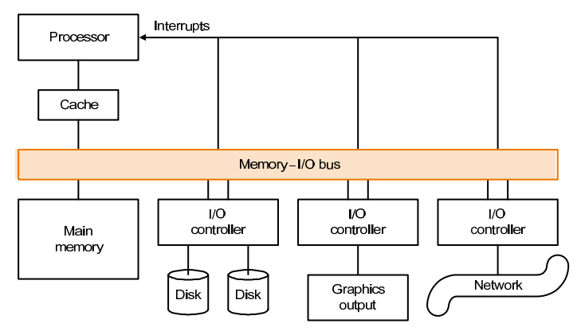
每一个 I/O 设备都有一个对应的控制器，负责管理设备的操作。控制器通过总线（bus）与 CPU 进行通信，从而实现 I/O 设备与 CPU 的交互。
Three characteristics
-
Behavior
- Input (read once), output (write only, cannot read) ,or storage (can be reread and usually rewritten)
- 数据从 I/O 设备到主存储器称为输入（input），从主存储器到 I/O 设备称为输出（output）
-
Partner
- Either a human or a machine is at the other end of the I/O device, either feeding data on input or reading data on output.
- 与 I/O 交互的对象是人还是机器
-
Data rate
-
The peak rate at which data can be transferred between the I/O device and the main memory or processor.
- 数据传输的速率
如何评价一个 I/O 设备的性能主要取决于它的具体用途
-
Throughput
这里的吞吐量可以指单位时间传输的数据量，也可以指单位时间进行的 I/O 的操作的数量
-
Response time
响应时间，其实就是进行一次 I/O 操作所需的时间
-
both throughput and response time
同时考虑上面两个因素
Disk Storage and Dependability¶
Two major types of magnetic disks
- floppy disks
-
hard disks
- larger
- higher density
- higher data rate
- more than one platter
The organization of hard disk¶
-
platters: disk consists of a collection of platters, each of which has two recordable disk surfaces
一个硬盘实际上是由多个盘片堆叠起来的，每个盘片都有两个可记录的表面
-
tracks: each disk surface is divided into concentric circles
每一个盘上都有许多个同心圆轨道，称为磁道
-
sectors: each track is in turn divided into sectors, which is the smallest unit that can be read or written
每一个磁道又被分成了许多个扇区，扇区是硬盘上最小的可读写单元
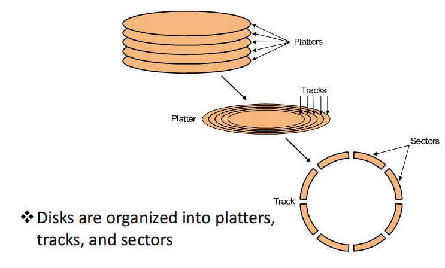
To access data of disk¶
在磁盘上寻找数据首先需要先找到对应的磁道，然后找到对应的扇区，最后才能读取数据。
-
Seek: position read/write head over the proper track
寻找对应扇区是需要把磁头移动到对应的磁道上，这个过程称为寻道（seeking）
-
Rotational latency: wait for desired sector
找到对应的磁道之后，还需要等待磁盘旋转到对应的扇区，这个过程称为旋转延迟（rotational latency）
- average latency is the half-way round the disk
-
Transfer: time to transfer a sector——function of rotation speed
等待磁盘旋转到对应的扇区之后，就可以传输数据，进行数据的读写了
Dependability¶
可靠性（Dependability / Reliability）是衡量设备能够正常工作的能力
Computer system dependability is the quality of delivered service such that reliance can justifiably be placed on this service.
衡量可靠性的方法：
-
MTTF（mean time to failure）
平均无故障时间
-
MTTR （mean time to repair）
平均修复时间
-
MTBF（Mean Time Between Failures）= MTTF+ MTTR
平均故障间隔时间
-
Availability = MTBF / (MTBF + MTTR)
可用性
提升 MTTF 的三种方法
-
Fault avoidance:
preventing fault occurrence by construction
例如在硬盘达到使用寿命之前替换硬盘
-
Fault tolerance:
using redundancy to allow the service to comply with the servic specification despite faults occurring, which applies primarily to hardware faults
例如将硬盘的内容在多处进行备份
-
Fault forecasting:
predicting the presence and creation of faults, which applies to hardware and software faults
例如通过监控硬盘的使用情况，预测硬盘的可能出现的故障并提前进行维护
Reliability of \(N\) disks = Reliability of \(1\) Disk \(÷ \, N\)
Redundant Arrays of (Inexpensive) Disks¶
有时候我们会使用多个硬盘组成一个磁盘阵列来储存数量庞大的数据，好处是可以有多个读写口，可以同时进行数据访问，但这样就会降低硬盘的可靠性，
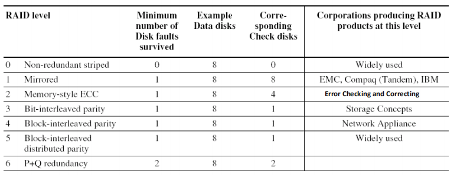
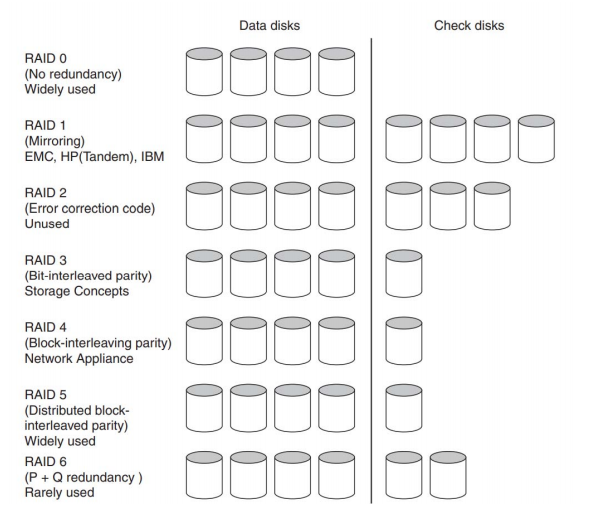
RAID 0: No Redundancy¶
Data is striped across a disk array but there is no redundancy to tolerate disk failure.
数据被分割，存放在多个硬盘里，但并没有任何冗余保障，一旦硬盘出现故障，数据就会丢失
RAID 0 is something of a misnomer as there is no Redundancy
misnomer: 误称，用词不当
RAID 1: Disk Mirroring/Shadowing¶
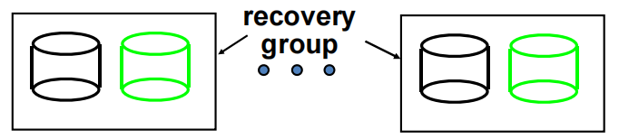
每一个磁盘都有一个镜像，数据同时存放在两个硬盘上，一旦一个硬盘出现故障，另一个硬盘上的数据仍然可以被访问
- 写的时候需要同时对两个盘进行写入
- 代价昂贵：需要两倍的硬盘空间（额外开销）
RAID 3: Bit‐Interleaved Parity Disk¶
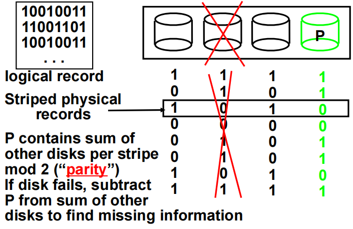
P contains sum of other disks per stripe mod 2 （“parity”）
额外增加一个硬盘用来存放校验位，原理是奇偶校验
- 当其中一个盘的数据出现问题时，可以通过其他盘的数据和校验位来恢复数据
- 问题在于我们无法确定哪一个盘出现问题（具体怎么解决老师也没讲）
RAID 4: Block‐Interleaved Parity Disk¶
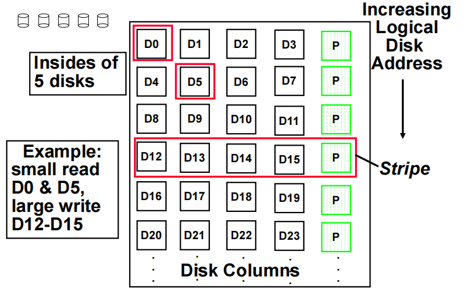
RAID 4 的设计灵感直接来自于 RAID 3，RAID 4 让每一个 sector 都有自己单独的校验位，这样就可以确定出错的硬盘
- 允许同时对不同的盘进行独立的读操作
- 对于 small read 和 large write 表现良好
- 对于 small write 表现不佳，例如上面同时写 D0 和 D5 时就要对 Parity 的盘修改两次，会增加开销
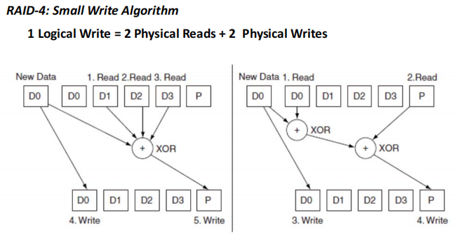
RAID 5: Block‐Interleaved Distributed Parity¶
RAID 5 相对于 RAID 4 的改进在于将校验位分布到所有的硬盘上，这样就可以避免 RAID 4 中的写入问题
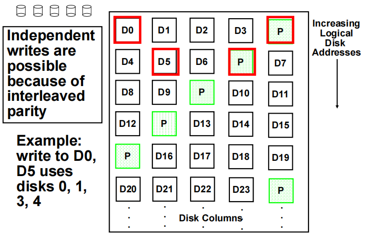
- 例如上面的例子，要修改 D0 和 D5 时会同时对 0，1，3，4 四个盘进行写入，可以一次性完成写入操作
RAID 6: P+Q Redundancy¶¶
有 P, Q 两个校验位，可以恢复出两个盘的内容。
具体的实现没讲
RAID Techniques
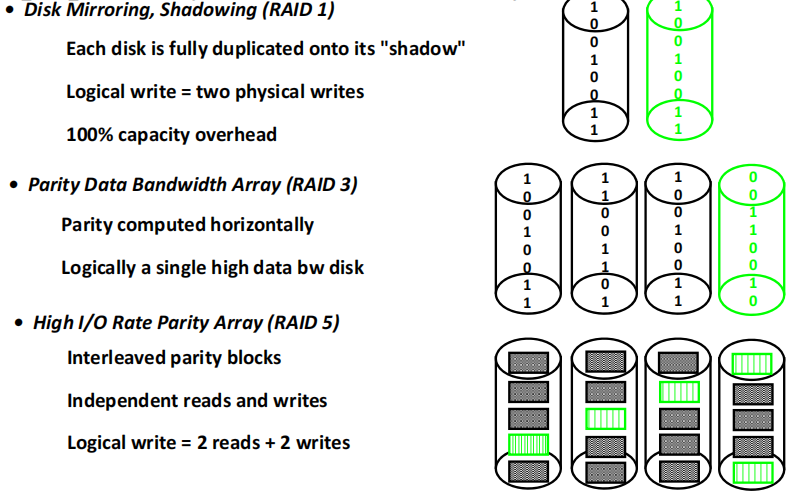
Buses and Other Connections between Processors Memory, and I/O Devices¶
Bus：shared communication link（one or more wires）
Difficult design:
- may be bottleneck
- length of the bus
- number of devices
- tradeoffs (fast bus accesses and high bandwidth)
- support for many different devices
- cost
Bus Basics¶
总线并不只有单独一根线，实际上时多条线组合在一起，把各种设备相互连接起来。
A bus contains two types of lines
- Control lines: signal requests and acknowledgments, and to indicate what types of information is on the data lines.
- Data lines: carry information (e.g., data, addresses, and complex commands) between the source and the destination.
Bus transaction：include two parts: sending the address and receiving or sending the data
- input: inputting data from the device to memory
- output: outputting data to a device from memory
Bus Transaction
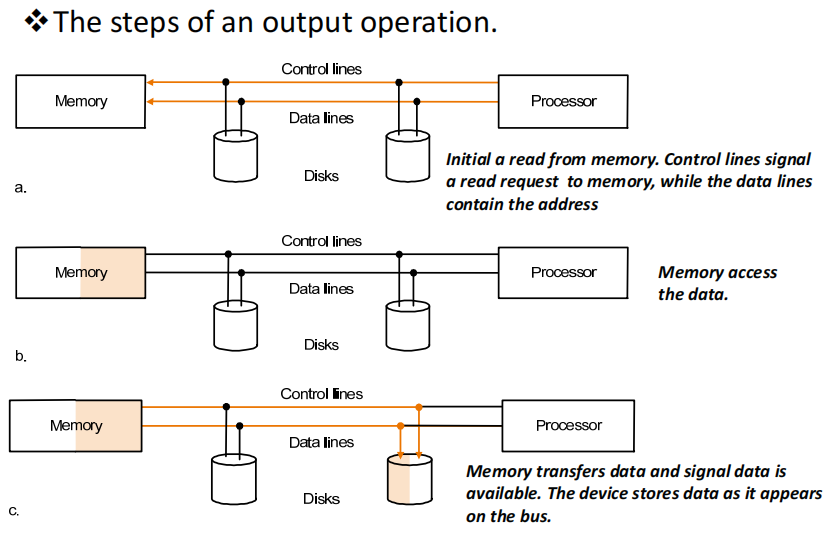
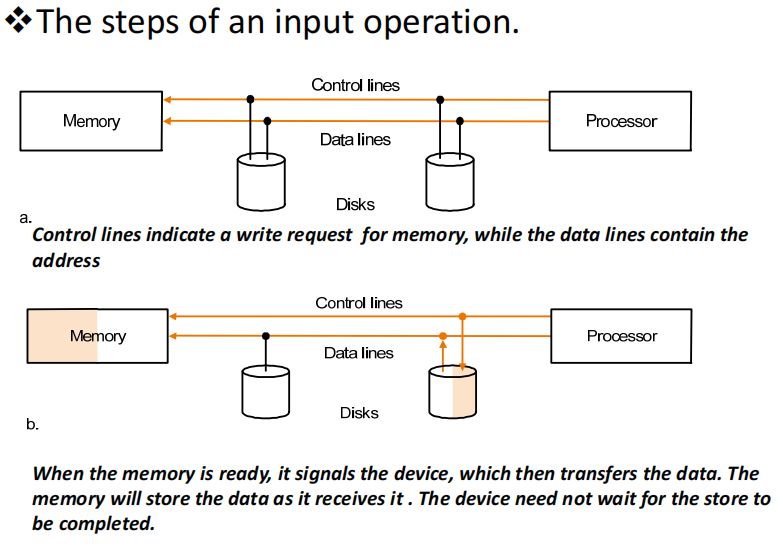
Types of buses:
- processor‐memory (short, high speed, custom design)
- backplane (high speed, often standardized, e.g., PCI)
- I/O (lengthy, different devices, standardized, e.g., SCSI)
Synchronous vs. Asynchronous¶
-
Synchronous bus use a clock and a synchronous protocol, fast and small but every device must operate at same rate and clock skew requires the bus to be short
所有的设备都有相同的时钟频率，但由于数据传输有延迟，clock skew 无法避免，所以信号线的长度必须尽可能短
-
Asynchronous bus don’t use a clock and instead use handshaking
设备不需要有相同的时钟频率，通过握手协议来进行数据传输
握手协议
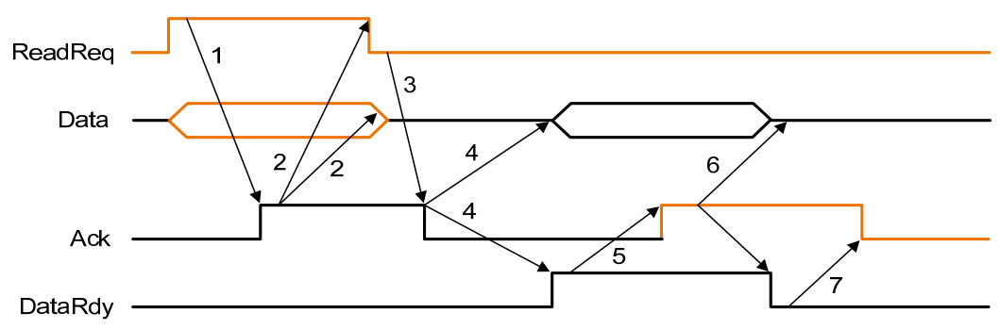
- When memory saw the ReadReq line, it reads the address from the data bus, starts the memory read operation，then raises Ack to tell the device that the ReadReq signal has been seen.
- I/O device saw the Ack line high and releases the ReadReq data lines.
- Memory sees that ReadReq is low and drops the Ack line.
- When the memory has the data ready, it places the data on the data lines and raises DataRdy.
- The I/O device sees DataRdy, reads the data from the bus , and signals that it has the data by raising ACK.
- The memory sees Ack signals, drops DataRdy, and releases the data lines.
- Finally, the I/O device, seeing DataRdy go low, drops the ACK line, which indicates that the transmission is completed.
- 首先由 I/O 设备发出 ReadReq 信号，请求从主存储器读取数据，并传输相应的内存地址，主存储器接收到这个信号并读取地址后，发出 Ack 信号，表示已经收到了 ReadReq 信号，与此同时开始准备数据
- I/O 设备收到 Ack 信号后，把 ReadReq 信号置低位，同时不再占用 data bus
- 主存储器发现 ReadReq 信号已经被置低，就会把 Ack 信号置低
- 当主存储器准备好数据后，会把数据放到 data bus 上，并升高 DataRdy 信号
- I/O 设备收到 DataRdy 信号后，就会读取 data bus 上的数据，当数据已经读取完不之后，会发出 ACK 信号，表示已经读取完数据了
- 主存储器收到 ACK 信号后，会把 DataRdy 信号置低，同时不再占用 data bus
- I/O 设备收到 DataRdy 信号后，会把 ACK 信号置低，表示整个数据传输过程已经完成了，总线可以用于其他的操作了
Bus Arbitration¶
总线上由多个设备共享，其中如果多个设备同时需要使用总线，就会出现冲突，这时就需要总线仲裁（bus arbitration）来解决这个问题
Example
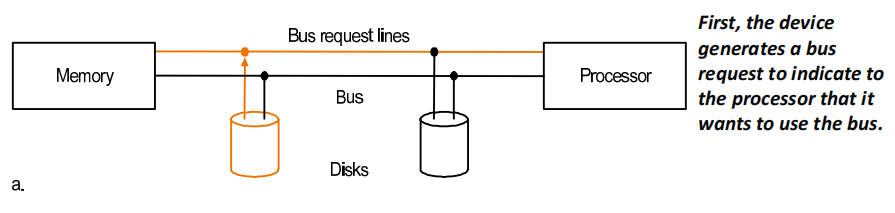
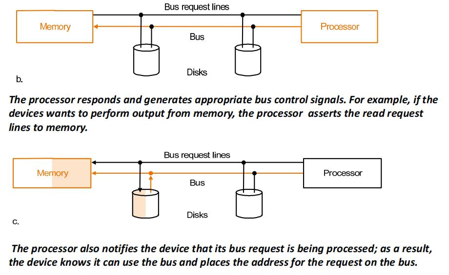
在上面的例子中，总线上只有 CPU 作为 master，由它来决定哪一个 I/O 设备可以占用总线执行操作，实际上总线上可能会有多个 master，这些 master 具有不同的优先级。
Two factors in choosing which device to grant the bus:
-
bus priority
设备之间的优先级
-
fairness
公平性，即每一个设备都有机会占用总线
Interfacing I/O Devices to the Memory, Processor, and Operating System¶
I/O 系统的三个特点
- shared by multiple programs using the processor.
- often use interrupts to communicate information about I/O operations.
- The low‐level control of I/O devices is complex
OS 和 I/O 设备之间的通信
-
The OS must be able to give commands to the I/O devices.
OS 要能给 IO 设备发出命令，比如启动、关机
-
The device must be able to notify the OS, when I/O device completed an operation or has encountered an error.
当 I/O 设备完成一个操作或者遇到错误时，需要有办法通知 OS
-
Data must be transferred between memory and an I/O device
数据需要在内存和 I/O 设备之间传输
当 CPU 需要访问特定的 I/O 设备时，要有一个地址（或者可以理解为编号）来指向这个设备，这个地址称为 I/O 端口（I/O port）
-
memory-mapped I/O
把内存地址中的一部分分出来给 I/O 设备用，使用 ld/sd 来访问时，会自动转化为访问 I/O 设备
-
special I/O instructions
为访问 I/O 设备设计专门的指令，例如 x86 中的
in和out指令
Communication with the Processor¶
-
Polling: The processor periodically checks status bit to see if it is time for the next I/O operation.
轮询，定期检查 I/O 设备是否需要执行什么操作，但是会占用 CPU.
-
Interrupt: When an I/O device wants to notify processor that it has completed some operation or needs attentions, it causes processor to be interrupted.
当 I/O 设备需要获取 CPU 的注意时（例如完成了某个操作，需要 CPU 把数据读取走），向 CPU 传递一个中断，等待其响应。相较于轮询的好处是 CPU 可以一直做自己的事情，直到出现中断时才会去处理 I/O 设备的请求。
-
DMA (direct memory access): the device controller transfer data directly to or from memory without involving processor.
I/O 设备直接和内存交互，不需要 CPU 参与。
Interrupt-Driven I/O mode¶
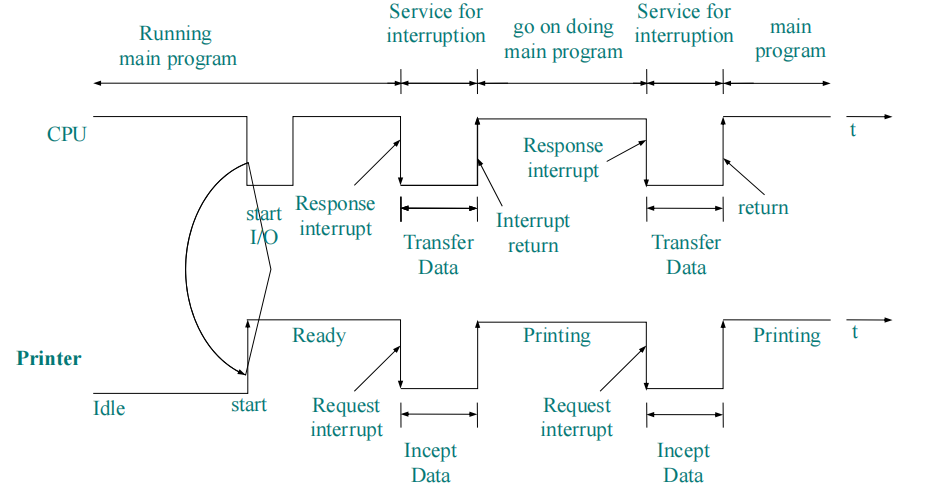
CPU 向打印机发送打印的请求之后就会去做其他的任务，打印机每一次完成打印之后都会给 CPU 发送一个中断信号，CPU 收到中断信号后就会去处理打印机的请求，然后继续做自己的任务。
DMA transfer mode¶
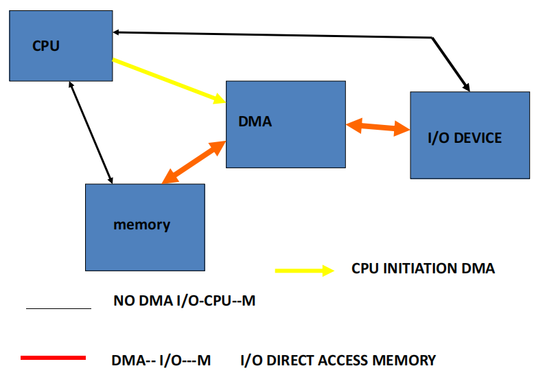
每一次使用 DMA 传输数据时，CPU 需要先设置好 DMA，然后 DMA 就会帮助 I/O 设备和内存进行直接的数据传输，不需要 CPU 参与。
A DMA transfer need three steps:
-
The processor sets up the DMA by supplying some information, including the identity of the device, the operation, the memory address that is the source or destination of the data to be transferred, and the number of bytes to transfer.
每次传输数据前，CPU 都要配置好 DMA，包括哪个设备、做什么操作、内存地址、数据大小等。
-
The DMA starts the operation on the device and arbitrates for the bus. If the request requires more than one transfer on the bus, the DMA unit generates the next memory address and initiates the next transfer.
DMA 开始操作设备，占用总线。如果需要多次传输，DMA 会自动生成下一个内存地址，开始下一次传输。
DMA 也是挂在总线上的 master, 但优先级没有 CPU 高。因此它会趁 CPU 空闲的时候搬运数据，可以充分利用总线。
-
Once the DMA transfer is complete, the controller interrupts the processor, which then examines whether errors occur.
DMA 完成后，给 CPU 发中断信号，由CPU 检查是否有错误。
Compare polling, interrupts, DMA
-
The disadvantage of polling: wasting processor time. When the CPU polls the I/O devices periodically, the I/O devices maybe have no request or have not get ready.
轮询会浪费 CPU 大量的时间，因为大部分情况下 I/O 设备都没有请求或者还没有准备好。
-
If the I/O operations is interrupt driven, the OS can workon other tasks while data is being read from or written tothe device.
中断驱动的 I/O 操作可以让 CPU 在 I/O 设备读写数据的时候做其他的事情。
-
Because DMA doesn’t need the control of processor, it will not consume much of processor time.
DMA 不需要 CPU 的控制，所以不会占用 CPU 的时间，但 DMA 实际上只用于数据的传输，它与 polling 和 interrupt 并不冲突